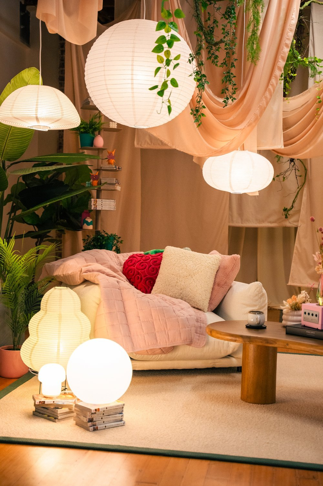
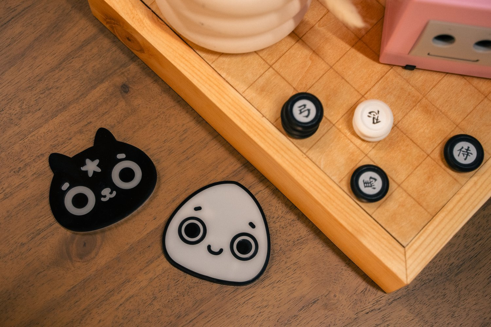
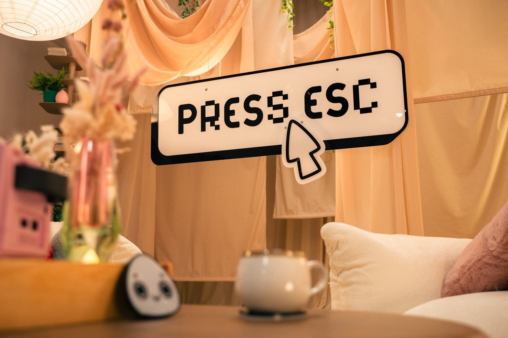

valkyrae podcast
Client: Valkyrae
Year: 2024
Role: Set Design | Environmental Branding | Visual Identity Integration
When longtime collaborators and close friends Valkyrae and Alythuh launched Press ESC, they weren’t just starting a podcast—they were creating a space to pause the noise and have the conversations that rarely happen on stream. Stories about identity, burnout, love, loss, growth—and all the human moments in between.
With Alythuh leading the development of the show’s branding, the visual identity was already clear: soft, grounded, and deeply personal. Frenzy was brought in to take that brand and bring it to life spatially—turning it into a set that felt like an emotional refuge in an online world that rarely slows down. Press ESC became a space for connection, designed by women who know what it means to hold space for each other, and brought to life with a deep respect for the emotions, stories, and people at the heart of it.
The YouTube channel has grown to over 117,000 subscribers, with over 11.3 million total views, ranking in the top 1.5% globally. It’s their authenticity, dynamic chemistry, and clear creative vision that resonated with audiences—allowing Press ESC to build such impressive reach and a deeply engaged fanbase.
Just real conversations in a space made for them.
Lighting & Textures
Warm, ambient lighting and natural textures created a cozy, emotionally resonant setting perfect for both laughter and vulnerability. Paper lanterns in varying shapes and sizes added visual interest while maintaining a cohesive feel. Every lighting element was chosen with curved edges in mind, reinforcing the gentle, welcoming feel of the space. For ease of use, all lighting was wired to switches for quick, seamless control by the production team.
Prop & Brand Integration
Brand mascots were woven into the set through custom-made coasters that paired well with the table-top custom Hunter x Hunter Gungi Board. Personalized set dressing included fan-favorite items like Zoro’s swords, wooden Koroks, stacks of manga, and a nostalgic GameCube, creating Easter eggs for fans.




Produced by Valkyrae, Marche, and Alythuh
Creative Direction by Alythuh